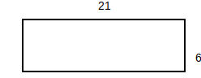
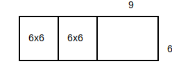
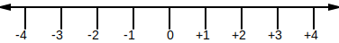
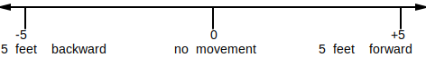

PREREQ OF NEEDING TO KNOW ABOUT REAL NUMBERS AND ARITHMETIC OPERATIONS ON THOSE REAL NUMBERS.
TODO: continue with openstax elementary algebra, then intermediate algebra, then college algebra DO NOT DO THE PROBLEMS, JUST DO PROCESS AND TERMS
Every composite number can be written as a product of prime numbers. For example...
The process of breaking down a composite number into a product of primes is called prime factorization. Prime factorization happens via the factor tree algorithm, which involves taking the input and recursively breaking it down into one of its factor pairs until all factors are prime.
For example, to break down the number 54, choose one of its factor pairs...
Then, for each factor, break it down even further by choosing one of its factor pairs...

All factors are now prime -- 54 = 3*2*3*3.
⚠️NOTE️️️⚠️
Prime factors are typically written out from smallest to largest, so writing out the prime factors of the example above would be 54 = 2*3*3*3.
If you know exponents, the example above can be further condensed as .
When choosing a factor pair, the pair can't include 1 or the number being factored itself. For example, if choosing a factor pair for 12..
The reason why ... * 1 can't be used is because 1 is neither a prime nor can it be factorized to primes. * 12 (the number being factored itself) can't be used is because it effectively does nothing -- it finishes at the same place it started at.
For example, trying to build a factor tree for 12 using one of the bad factor pairs...

Note that the prime factors for a number will always be the same regardless of which factor pairs are chosen (as long as its a valid factor pair). For example, in the initial example above, if 54 were factored to (2, 27) instead of (9, 6) ...

The prime factors would still be 54 = 2*3*3*3.
The way to perform this algorithm as code is as follows...
arithmetic_code/Factor.py (lines 104 to 124):
@log_decorator
def factor_tree(num: int) -> FactorTreeNode:
log(f'Creating factor tree for {num}...')
factors = factor_fastest(num)
# remove factor pairs that can't used in factor true: (1, num) or (num, 1)
factors = set([f for f in factors if f != 1 and f != num])
ret = FactorTreeNode()
if len(factors) == 0:
ret.value = num
log(f'Cannot factor {num} is prime -- resulting tree: {ret}')
else:
factor1 = next(iter(factors))
factor2 = num // factor1
ret.value = num
ret.left = factor_tree(factor1)
ret.right = factor_tree(factor2)
log(f'Factored {num} to {factor1} and {factor2} -- resulting tree: {ret}')
return ret
↩PREREQUISITES↩
The least common multiple is the process of taking 2 numbers and finding the smallest multiple between them. That is, if you listed out their multiples starting from 1, the first match between them would be the least common multiple.
There are 2 common algorithms used to find the least common multiple between 2 numbers.
The first algorithm is called the listing multiples method. It involves listing out the multiples for each number starting from 1 until there's a match. For example, finding the least common multiple between 4 and 6...
| 1 | 2 | 3 | 4 | 5 | 6 | 7 | 8 | 9 | |
|---|---|---|---|---|---|---|---|---|---|
| 4 | 4 | 8 | 12 | 16 | 20 | 24 | 28 | 32 | 36 |
| 6 | 6 | 12 | 18 | 24 | 30 | 36 |
is 12 because 6*2=12 and 4*3=12.
The way to perform this algorithm as code is as follows...
arithmetic_code/LeastCommonMultiple.py (lines 10 to 39):
@log_decorator
def lcm_walk(num1: int, num2: int) -> tuple[list[int], list[int]]:
num1_multiples: list[int] = []
num2_multiples: list[int] = []
num1_counter = 1
num2_counter = 1
while True:
log(f'Calculating {num1_counter} multiple of {num1}...')
num1_multiple = num1 * num1_counter
num1_multiples.append(num1_multiple)
log(f'Calculating {num2_counter} multiple of {num2}...')
num2_multiple = num2 * num2_counter
num2_multiples.append(num2_multiple)
log(f'Testing {num1_multiple} vs {num2_multiple}')
if num1_multiple == num2_multiple:
log(f'Matches! LCM is {num1_multiple}')
break
elif num1_multiple < num2_multiple:
log(f'Increasing first multiple (multiple for {num1})')
num1_counter += 1
elif num1_multiple > num2_multiple:
log(f'Increasing second multiple (multiple for {num2})')
num2_counter += 1
return num1_multiple
The second algorithm is called the prime factors method. It involves calculating the prime factors for each number and merging them to get the least common multiple. For example, finding the least common multiple between 4 and 6...
prime factors of 4: 4 = 2 * 2
prime factors of 6: 6 = 2 * 2 * 3
merge the prime factors together to get 12 = 2 * 2 * 3
The way to perform this algorithm as code is as follows...
arithmetic_code/LeastCommonMultiple.py (lines 43 to 74):
@log_decorator
def lcm_prime_factorize(num1: int, num2: int) -> int:
log(f'Calculating prime factors for {num1}...')
num1_primes = sorted(factor_tree(num1).get_prime_factors())
log(f'{num1_primes}')
log(f'Calculating prime factors for {num2}...')
num2_primes = sorted(factor_tree(num2).get_prime_factors())
log(f'{num2_primes}')
distinct_primes: set[int] = set()
[distinct_primes.add(p) for p in num1_primes]
[distinct_primes.add(p) for p in num2_primes]
log(f'Combining prime factors to get LCM...')
least_common_multiple = 1
least_common_multiple_primes = Counter()
for prime in sorted(list(distinct_primes)):
num1_count = num1_primes.count(prime)
num2_count = num2_primes.count(prime)
if num1_count >= num2_count:
for i in range(0, num1_count):
least_common_multiple = least_common_multiple * prime
least_common_multiple_primes[prime] += num1_count
else:
for i in range(0, num2_count):
least_common_multiple = least_common_multiple * prime
least_common_multiple_primes[prime] += num2_count
log(f'LCM is {least_common_multiple}')
return least_common_multiple
↩PREREQUISITES↩
The greatest common divisor is the process of taking 2 numbers and finding the largest possible divisor between the two of them. In other words, finding the greatest number that evenly divides both numbers.
There are 3 common algorithms used to find the greatest common divisor between 2 numbers.
The first algorithm is to test divisions on incrementally larger numbers until you reach the smaller of the 2 numbers. The largest tested number that was evenly divisible is the greatest common divisor. For example, for the numbers 22 and 8...
The greatest common divisor is 2.
The way to perform this algorithm as code is as follows...
arithmetic_code/GreatestCommonDivisor.py (lines 8 to 34):
@log_decorator
def gcd_naive(num1: int, num2: int) -> int:
log(f'Calculating gcd for {num1} and {num2}...')
log_indent()
log(f'Sorting to determine smaller input...')
min_num = min(num1, num2)
log(f'Testing up to smaller input ({min_num})...')
log_indent()
for i in range(1, min_num+1):
log(f'Testing {i}...')
quotient1 = num1 // i
remainder1 = num1 - (i * quotient1)
quotient2 = num2 // i
remainder2 = num2 - (i * quotient2)
if remainder1 == 0 and remainder2 == 0:
log(f'{num1} and {num2} are both divisible by {i}...')
found = i
else:
log(f'{num1} and {num2} are NOT both divisible by {i}...')
log_unindent()
log_unindent()
log(f'GCD is {found}')
return found
The second algorithm is to factor both numbers and take the largest common factor between them. The largest common factor is the greatest common divisor. For example, for the numbers 22 and 8, ...
The greatest common factor between them is 2.
⚠️NOTE️️️⚠️
You can also use prime factorization. Prime factorize both numbers to their prime factors -- any factors contained in both are prime factors of the greatest common divisor. For example...

The way to perform this algorithm as code is as follows...
arithmetic_code/GreatestCommonDivisor.py (lines 38 to 59):
@log_decorator
def gcd_factor(num1: int, num2: int) -> int:
log(f'Calculating gcd for {num1} and {num2}...')
log_indent()
log(f'Calculating factors for {num1}...')
factors1 = factor_fastest(num1)
log(f'Factors for {num1}: {factors1}')
log(f'Calculating factors for {num2}...')
factors2 = factor_fastest(num2)
log(f'Factors for {num2}: {factors2}')
log(f'Finding common factors...')
common_factors = factors1 & factors2 # set intersection
log(f'Common factors for {num1} and {num2}: {common_factors}')
found = max(common_factors)
log_unindent()
log(f'GCD is {found}')
return found
The third algorithm is to use Euclid's algorithm to compute the greatest common divisor. This is the algorithm most used by both humans and computers to calculate the greatest common divisor because, for large numbers, it's less labour intensive than the other two methods.
Imagine the numbers 8 and 22. The algorithm starts by sorting the numbers from largest to smallest and dividing them:
It then takes the divisor and the remainder, sorts them from largest to smallest, and divides them again:
It keeps repeating this process until the remainder reaches 0. For this example, it only needs to repeat the process one more time:
The greatest common factor is the divisor when the remainder is 0. In this example, it's 2.
The way to perform this algorithm as code is as follows...
arithmetic_code/GreatestCommonDivisor.py (lines 64 to 87):
@log_decorator
def gcd_euclid(num1: int, num2: int) -> int:
log(f'Calculating gcd for {num1} and {num2}...')
log_indent()
next_nums = [num1, num2]
while True:
log(f'Sorting {next_nums}...')
next_nums.sort() # sort smallest to largest
next_nums.reverse() # reverse it so that it's largest to largest
log(f'Checking if finished ({next_nums[1]} == 0?)...')
if next_nums[1] == 0:
found = next_nums[0]
break
log(f'Dividing {next_nums} and grabbing the remainder for the next test...')
_ = next_nums[0] // next_nums[1]
remainder = next_nums[0] - (_ * next_nums[1])
next_nums = [next_nums[1], remainder]
log_unindent()
log(f'GCD is {found}')
return found
⚠️NOTE️️️⚠️
The following is my attempt at explaining Euclid's algorithm after reading several online resources. You need an understanding of geometry and algebra before continuing.
Geometric explanation
Conceptually, you can think of Euclid's algorithm as recursively breaking off square chunks out of a rectangular area until it finds the smallest possible chunk that can be evenly copied to recreate the original rectangle. For example, imagine the numbers 21 and 6...

Since in 21x6, 6 is the smaller side, break off 6 from the 21 to get a 6x6 block...
Since in 15x6, 6 is the smaller side, break off 6 from the 15 to get a 6x6 block...

Since in 9x6, 6 is the smaller side, break off 6 from the 9 to get a 6x6 block...

Since in 3x6, 6 is the smaller side, break off 3 from the 6 to get a 3x3 block...

The remaining block is also 3x3 block. As such, the largest size that this entire rectangle can be constructed from is 3x3. The greatest common divisor is 3.

Notice how this is subtracting from the larger side at each step. Since division is iterative subtraction, this entire algorithm can be done using division. Starting from the very beginning...
Since in 21x6, 6 is the smaller side, break off as many blocks of 6 as possible from 21: (3 blocks of 6x6, with 3 remaining)...
Since in 3x6, 3 is the smaller side, break off as many blocks of 3 as possible from 6: (2 blocks of 3x3, with 0 remaining)...
Algebraic explanation
If 2 numbers are evenly divisible by some other number, then their sum/difference must also be divisible. For example, the numbers 21 and 6 are both divisible by 3:

Since they're both divisible by 3, if you were to add 18 and 6 together, the sum would also be divisible by 3...

Similarly, if you were to subtract 21 and 6, the difference would also be divisible by 3...

Even if you don't know what the divisor is, you can recursively break down the problem using the rules stated above. Imagine that you didn't know that 3 was the divisor for the previous example, but you know that some evenly divisible number existed...
Since you know that the if 21 and 6 are both divisible by d, their difference must also be divisible by d...
Now you know that 3 numbers are divisible by d: 21, 6, 15. Since you know that 15 and 6 are both divisible by d, their difference must also be divisible by d...
Now you know that 4 numbers are divisible by d: 21, 6, 15, and 9. Since you know that 15 and 9 are both divisible by d, their difference must also be divisible by d...
Now you know that 5 numbers are divisible by d: 21, 6, 15, 9, and 6. Since you know that 9 and 6 are both divisible by d, their difference must also be divisible by d...
Now you know that 6 numbers are divisible by d: 21, 6, 15, 9, 6, 3. Since you know that 9 and 6 are both divisible by d, their difference must also be divisible by d...
is 0, so the algorithm stops at this point -- d is 3.
⚠️NOTE️️️⚠️
Notice how for each subtraction step, the last 2 numbers are being chosen. When subtracting, the larger number goes first -- always subtract FROM the larger number.
You can plug 3 for d into the expressions above and each will evaluate to a whole number (no remainder). This algorithm is continually reducing the problem until it converges to the single greatest common divisor...
fraction - A way of representing numbers with equally-sized partial objects. The syntax for a fraction is , where the...
For example, if 4 parts make up a whole (denominator) and you have 9 of those parts (numerator), that's represented as .
proper fraction - A fraction with less than 1 whole (e.g. , , and ).
improper fraction - A fraction with at least 1 whole (e.g. , , and ).
equivalent fraction - Two fractions that represent the same value even though they have different numerators and denominators (number of parts may be different, but the overall value represented by the fraction is the same). For example, , , and are all considered equivalent fractions because they represent the same value.
simplified fraction - Of all equivalent fractions for a fraction, the one with smallest numerator and denominator. For the example above, is the simplified fraction for both and .
common denominator - Two fractions that have the same value for the denominator. For example, the fractions and don't have a common denominator, but their equivalent fractions and do.
reciprocal - A fraction with its numerator and denominator swapped. For example, the reciprocal of is .
mixed number - A fraction written in a form where an integer is used to represent the wholes and the remaining portion is written as a fraction. Recall that fractions can be thought of as unresolved integer division. For example, the fraction is equivalent to the division . Performing results in a quotient of (3 wholes with 3 remaining pieces). As such, can be written as the mixed number .
⚠️NOTE️️️⚠️
Don't get confused -- the mixed number means , it does not mean (multiplication).
number line - A type of diagram used to visualize the value that a number represents. It consists of a straight horizontal line with equidistant vertical notches spliced through out, where each notch is labelled with incrementally larger numbers from left-to-right...

The number being represented is marked on the line. For example, to represent the number 5...

addition - Combining the values of two numbers. For example, combining 3 items and 5 items together results in 7 items...
[●●●] [●●●●●]
3 5
group values together
[●●●●●●●●]
7
subtraction - Removing the value of one number from another number. For example, removing 3 items from 5 items results in 2 items...
[●●●●●]
5
pick out 3 from the 5
[●●] [●●●]
2 3
multiplication - Iteratively adding a number to itself for a certain number of iterations.
3+3+3+3+3=15
[●●●] 3
[●●●] 3
[●●●] 3
[●●●] 3
[●●●] 3
The output of a multiplication operation is called the product. In the example above, 15 is the product.
The inputs into the multiplication operation are either...
division - Iteratively subtracting a number by another number to find out how many iterations can be subtracted. For example, 15 can be subtracted by 3 exactly 5 iterations before nothing's left...
[●●●●●●●●●●●●●●●] start with 15
[●●●●●●●●●●●●] 15-3=12 (iteration 1)
[●●●●●●●●●] 12-3=9 (iteration 2)
[●●●●●●] 9-3=6 (iteration 3)
[●●●] 6-3=3 (iteration 4)
[] 3-3=0 (iteration 5)
Another way of thinking about division is that it's chopping up a number. Imagine cutting up a pie into 15 pieces and eating 3 pieces at a time. The pie will be done after you've eaten 5 times.
The output of a division operation is called the quotient. In the example above, the quotient is 5 (it subtracts 5 times).
The inputs into the division operation are called the dividend and divisor. In the example above, 15 is the dividend and 3 is the divisor.
⚠️NOTE️️️⚠️
One way to think of this is that the dividend (the number on the left / top) is the starting value, and the divisor is the number being iteratively subtracted.
In certain cases, division may result in some remaining value that isn't large enough for another subtraction iteration to take place. This remaining value is called the remainder. For example, 16 can be subtracted by 3 for 5 iterations but will have a remainder of 1...
[●●●●●●●●●●●●●●●●] start with 16
[●●●●●●●●●●●●●] 16-3=13 (iteration 1)
[●●●●●●●●●●] 13-3=10 (iteration 2)
[●●●●●●●] 10-3=7 (iteration 3)
[●●●●] 7-3=4 (iteration 4)
[●] 4-3=1 (iteration 5)
only 1 item left -- not enough for another subtraction iteration
1 is the remainder
multiple - Given integer numbers n and m (use the letters as placeholders for some arbitrary integer numbers). m is a multiple of n if some integer exists such that . For example, the multiples of 2 are...
2*0=2 -- 0 is a multiple of 2
2*1=2 -- 2 is a multiple of 2
┌──┐
│●●│ 2 can be grouped as 1 group of 2
└──┘
2*2=4 -- 4 is a multiple of 2
┌──┬──┐
│●●│●●│ 4 can be grouped as 2 groups of 2
└──┴──┘
2*3=6 -- 6 is a multiple of 2
┌──┬──┬──┐
│●●│●●│●●│ 6 can be grouped as 3 groups of 2
└──┴──┴──┘
2*4=8 -- 8 is a multiple of 2
┌──┬──┬──┬──┐
│●●│●●│●●│●●│ 8 can be grouped as 4 groups of 2
└──┴──┴──┴──┘
etc..
A number like 7 wouldn't be a multiple of 2 because there is no integer that can be multiplied by 2 to get 7 -- 2*3.5=7, but 3.5 isn't an integer.
┌──┬──┬──┬─┐
│●●│●●│●●│●│ 7 can't be grouped as groups of 2 (last group only has 1)
└──┴──┴──┴─┘
divisible - Given integer numbers d and n (use the letters as placeholders for some arbitrary integer numbers). d is divisible by n if has a remainder of 0. For example, 8 is divisible by...
8/1=8 -- 8 is divisible by 1
┌────────┐
│●●●●●●●●│ 8 can be grouped as 1 group of 8
└────────┘
8/2=4 -- 8 is divisible by 2
┌────┬────┐
│●●●●│●●●●│ 8 can be grouped as 2 groups of 4
└────┴────┘
8/4=2 -- 8 is divisible by 4
┌──┬──┬──┬──┐
│●●│●●│●●│●●│ 8 can be grouped as 4 groups of 2
└──┴──┴──┴──┘
8/8=1 -- 8 is divisible by 8
┌─┬─┬─┬─┬─┬─┬─┬─┐
│●│●│●│●│●│●│●│●│ 8 can be grouped as 8 groups of 1
└─┴─┴─┴─┴─┴─┴─┴─┘
In all of the above cases, there is no remainder. 8 wouldn't be divisible by a number like 3 because there would be a remainder. 8/3=2R2.
┌───┬───┬──┐
│●●●│●●●│●●│ 8 can't be grouped as groups of 3 (last group only has 2)
└───┴───┴──┘
factor - Given a whole number x, the whole number f is its factor if x is divisible by f: x divided by f results in no remainder. For example, the factors of 32 are...
... 1, 2, 4, 8, 16, and 32. The factors for any number will always be between 1 and that number (inclusive).
prime - A counting number with only two factors (1 and itself). Examples of prime numbers: 2, 3, 5, 7, 11, 13, 17, 19, 23, 29, 31, 37, 41, 43, and 47.
composite - A counting number with more than 2 factors. Examples of composite numbers: 4, 6, 8, 9, 10, 12, 14, 15, 16, 18, and 20.
prime factorization - The process of breaking down a composite number into a product of primes. Every composite number can be written as a product of prime numbers. For example...
least common multiple - The process of taking 2 numbers and finding the smallest multiple between them. That is, if you listed out their multiples starting from 1, the first match between them would be the least common multiple.
greatest common divisor - The process of taking 2 numbers and finding the largest possible divisor between the two of them. That is, finding the greatest number that evenly divides both numbers.
⚠️NOTE️️️⚠️
This is also referred to as the highest common factor -- you're finding the largest factor that's common in both of them. Common factors between the numbers will evenly divide both numbers.
positive - Numbers may be mirrored across 0, where everything to the ...

Conceptually, you can think of the positives the same way you think about natural numbers. They represent some value. For each positive, there's a corresponding negative that represents the opposite of that positive value. For example, if...
positive integers represent steps forward, then negative integers would represent steps backward.

positive integers represent money gained, then negative integers would represent money owed or spent.

positive integers represent depth below sea-level, then negative integers would represent elevation above sea-level.

sign - A prefix that determines if a number is positive or negative. All numbers other than 0 have a sign. 0 represents nothing / no value, which is why it doesn't have a sign (it's used as a separation point between the positive and negative numbers).
If a number (other than 0) is positive, the convention is to leave the + sign is typically left out.
average / mean - The "typical" number in a list of numbers. Numbers in the list are summed together, then the result is divided by the count of numbers in that list. For example, to average of [1, 2, 3] is 2: 1+2+3 = 6, then 6 / 3 = 2.
median - The middle number in a sorted list of numbers. Numbers in the list that come ...
When the count of numbers in the list is odd, there is a middle number. For example, the median of [55, 57, 58, 59, 70] is 58.
When the count of numbers in the list is even, there is no middle number. The median of a list with an even count is the two numbers closest to the middle averaged together. For example, the median of [3, 5, 6, 7, 9, 10] is the average of 6 and 7: 6.5.
mode - The number that appears most often in a list of numbers. For example, the mode of [5, 5, 6, 7, 8, 8, 8, 10] is 8, because 8 appears the most often in the list.
Some lists may have multiple modes. For example, the mode of [1, 5, 5, 6, 6, 8] is both 5 and 6, because 5 and 6 appear the same amount of times, and that amount is more often than any other number in that list.
frequency - A count of how often some number occurs. For example, in the list [1, 5, 5, 6, 6, 8], ...
probability - A number describing how likely it is for a desired outcome to occur in some scenario.Probability is calculated as the number of desired outcomes over the number of total outcomes: . The result is a number between 0 and 1, where 0 means never happens and 1 means always happens.
For example, a bowl of marbles has 6 red marbles and 1 blue marble. Without looking, selecting a blue marble from the bowl has a probability of . The desired outcome is selecting a blue marble (1 marble is blue) divided by the total number of marbles in the bowl (7 marbles total).
ratio - A comparison of two numbers representing measurements of the same unit (e.g. inches, lbs, US dollars, etc..), written as either a fraction or in the form . For example, in a bag of M&Ms, there are 30 red M&Ms to 20 blue M&Ms, meaning the ratio of red to blue is or . The fraction, once simplified, is , meaning for every 3 red M&Ms there are 2 blue M&Ms.
rate - A comparison of two numbers representing measurements of different units (e.g. inches, lbs, US dollars, etc..), written as a fraction . For example, it costs $100 to fill up 2 Olympic sized swimming pool with water, meaning that the rate of money to water is . The fraction, once simplified, is , meaning it costs $50 to fill up each Olympic sized swimming pool.
unit rate - The rate , but normalized such the rate only considers a single unit of the second measurement. For example, it costs $100 to fill up 2 Olympic sized swimming pool with water, meaning that the rate of money to water is . Once converted to a unit rate, it becomes $50 to fill up a single Olympic sized swimming pool.
To figure out the unit rate, convert the fraction to a decimal (divide its numerator by its denominator).
square - Power of two. For example, 5 squared is . The word square is used because power of 2 visually represents a square (e.g. 5 rows stacked on top of each other, where each row has 5 cells).

perfect square - The result of a whole number being squared. For example, because , 9 is a perfect square.
cube - Power of three. For example, 5 cubed is . The word cube is used because power of 3 visually represents a cube (e.g. represents a square, and stacking together 5 of those squares makes a cube: )

square root - The root when the exponent is 2. For example, the square root of 9, written as or , is 3 because .
cube root - The root when the exponent is 3. For example, the cube root of 8, written as , is 2 because .
root - Given the result of an exponentiation and the exponent used, determines the original number that the exponentiation was performed on. For example, given the result 125 and the exponent 3, the original number that the exponent was applied on is 5: vs .
power - Iteratively multiply a number by itself a certain number of times. For example .
In the example, 5 is the base and 3 is the exponent. Another way to say it is power: 5 to the power of 3 is 125.
percent - A ratio whose denominator is 100. For example, 35 percent translates to a ratio of .
Percents are commonly written in short-form via the % symbol. For example, 35 percent is commonly written as 35%.
The name percent comes from combining the words "per" and "cent", where "cent" is an obsolete word for one hundred. Percent effectively means per 100. For example, 35 percent translates to 35 per 100.
whole number - Numbers that begin at 0 and increment by 1. Whole numbers only consist of wholes (no non-complete parts of wholes): For example, 0, 1, 2, 3, ... are whole numbers while 2.2 is not.
counting number - Numbers that begin at 1 and increment by 1. For example, 0, 1, 2, 3, ... are whole numbers while 0 and 2.2 are not.
Counting numbers start where you start counting / where set of something has at least one element. For example, if you're counting apples, you start counting at 1. There needs to be at least 1 apple to start.
integer number - 2 sets of counting numbers separated by 0, where everything to the...
rational number - A number that can be written as a fraction (ratio) where both the numerator and denominator are integers and the denominator isn't 0 (e.g. is not a rational number). Rational numbers can also be expressed in decimal form. Certain rational numbers, when converted to decimal form, will infinite digits that come after the decimal point but those digits have a repeating pattern to them (e.g. ).
All counting numbers, whole numbers, and integer numbers are rational numbers. Each can be expressed as a fraction (e.g. ).
irrational number - A number that cannot be written as a fraction (ratio). One property of irrational numbers is that, when converted to decimal form, the digits coming after the decimal point continue infinitely but don't have a repeating pattern to them (e.g. ). Contrast that to rational numbers,: When a rational number is converted to decimal form, it may have infinite digits after the decimal point but those digits will have a repeating pattern to them (e.g. ).
decimal number - Another way of representing a mixed number where the denominator of the fraction is 1 followed by 0s. For example, ...
The period placed in between the whole and the fraction is called a decimal point. The number to the ...
A mixed number can be converted to a decimal number so long as it has a suitable denominator: 1 followed by zero or more 0s. For example, has a suitable denominator but doesn't.
If the denominator isn't suitable, the mixed number may still be convertible so long as an equivalent fraction exists that does have a suitable denominator. In the previous example, is an equivalent fraction to .
real number - A decimal number whose fractional part can be arbitrarily small. There's no limit to how small it can get.
Real numbers include counting numbers, whole numbers, integer numbers, rational numbers, and irrational numbers.

commutative property - An operation that, when given two operands, always produces the same results regardless of the order in which operands are submitted.
associative property - An operation that, when chained together multiple times, always produces the same results regardless of which of the order in which those chained operations are executed.
distributive property - A property of multiplication that states, when the other operand is a chain of additions or subtractions, the multiplication can be exploded out into each of the terms in that chain. For example, 3*(5+2) = 3*5+3*2+3*−1 = 18.
Similarly, the distributive property makes the reverse possible as well. When a common factor exists between all the terms in a chain of additions or subtractions, that common factor can be pulled out on its own. For example, 15+6 = 3*5+3*2 = 3*(5+2) = 21.
identity property - A property of an operation that states the conditions for when that operation returns its left operand as its result.
⚠️NOTE️️️⚠️
Most places just list addition and multiplication. Inferred subtractions and division.
inverse property - A property of an operation that states the conditions for when that operation returns its identity as its result.
⚠️NOTE️️️⚠️
See here for formal-ish definition. Most places just list addition and multiplication. Inferred subtractions and division.
BEDMAS - An acronym that defines the order in which arithmetic operations should be evaluated. Short for:
Note the last two items above:
expression - A set of operations chained together. For example, (5+2)*3.
evaluate - To calculate an expression and produce a final numeric result. For example, evaluating (5+2)*3 results in 21.
variable - A placeholder for an unknown number inside an expression. For example, x+3 has the variable x.
equation - Two expressions separated by an equal sign, where those two expressions are said to evaluate to the same value. For example, 7+7+7=3*7.
Equations often contain variables. An equation is said to be solved once a set of numbers have been found for its variables such that, when substituted in for those variables, both expressions evaluate to the same number. For example, in x+2=3*7, both expressions evaluate to 21 when x is set to 19.
TODO: define above, write a parser, continue from 9
TODO: define above, write a parser, continue from 9
TODO: define above, write a parser, continue from 9
TODO: define above, write a parser, continue from 9